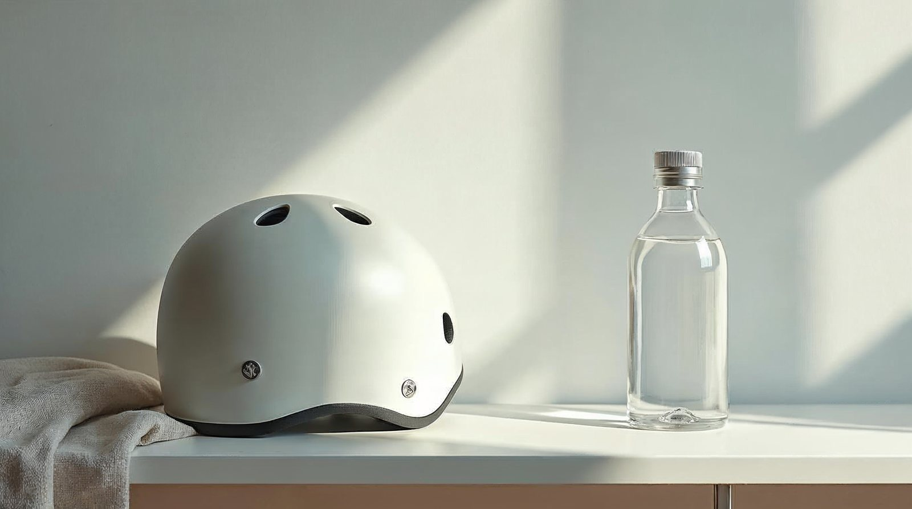
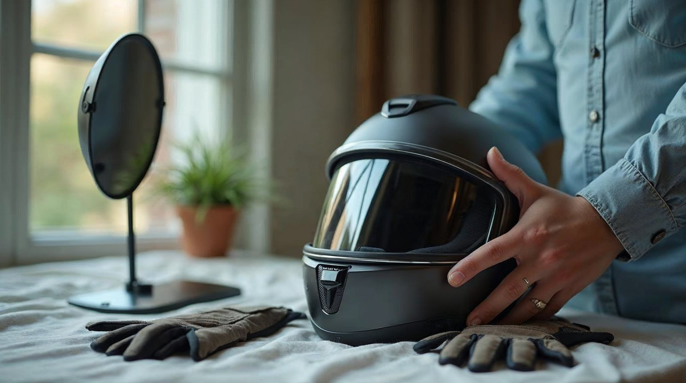

이종호 한의사 감수좋은꿈참사랑한의원 대표원장 (한의사 면허번호 19769)발행 2026-11-24 · 수정 2026-11-26
이 글의 차례
- 왜 이런 불편이 생길 수 있나요
- 몸의 불편과 놀람 반응은 어떻게 나눠 볼까요?
- 왜 서둘러 복귀하면 불편이 길어질 수 있을까요?
- 먼저 이렇게 여쭙니다
- 일상에서 먼저 해 볼 수 있는 것
- 상황별 예시
- 스스로 점검해 보세요
- 복귀 첫 주는 이렇게 나눠 보세요
- 장비와 오토바이도 함께 점검해 보세요
- 쉬는 날과 운행 사이에는 어떻게 지낼까요?
- 놀람이 남아 있을 때는 어떻게 할까요?
- 한의원에서 함께 살필 수 있는 경우
- 얼마나 지켜보고 언제 상담할까요
- 운행 기록은 이렇게 남겨 보세요
- 끼니와 잠도 함께 챙겨 주세요
- 동료나 가족에게도 알려 두세요
- 진료 날에는 무엇을 함께 확인하나요?
- 이렇게 기록해 오시면 상담이 쉬워집니다
- 이런 증상은 먼저 확인이 필요합니다
- 관련 글
다시 오토바이에 오르기 전에는 영상 검사로 큰 손상이 없는지 먼저 확인하고, 고개 돌리기와 핸들 쥐기가 편한지 점검하는 것이 순서입니다. 배달 일을 하다 넘어지거나 차와 부딪힌 뒤 생계 때문에 서둘러 다시 오토바이에 오르려는 분들이 있는데, 막상 타 보면 고개를 돌려 뒤를 볼 때 목이 걸리거나 교차로에서 몸이 먼저 굳어 놀란다는 이야기를 하십니다.
왜 이런 불편이 생길 수 있나요
- 넘어지거나 부딪힐 때 목과 어깨, 손목에 충격이 가해지면 움직일 때 걸리는 느낌이 남을 수 있습니다.
- 사고 장면이 몸에 남아 비슷한 상황에서 몸이 먼저 굳거나 심장이 뛰는 분도 있습니다.
- 서둘러 일을 다시 시작하면 회복 중인 부위에 다시 부담이 쌓이기 쉽습니다.
- 사고 뒤 잠을 설치면 긴장과 통증이 함께 길어지기도 합니다.
몸의 불편과 놀람 반응은 어떻게 나눠 볼까요?
고개를 돌릴 때 목이 걸리거나 핸들을 쥘 때 손목이 시큰한 것은 몸이 다친 부위에서 오는 불편입니다. 움직이는 방향과 범위에 따라 달라지고, 쉬면 조금 가라앉는 경우가 많습니다.
반면 사고 난 교차로에 가까워지면 심장이 뛰고 손에 땀이 나며 몸이 굳는 것은 놀람이 몸에 남은 반응입니다. 다친 곳이 없어도 생길 수 있고, 비슷한 소리나 장면에서 갑자기 올라오기도 합니다.
두 가지가 함께 있는 경우도 흔합니다. 놀라서 몸이 굳으면 목과 어깨에 힘이 들어가 통증이 더 크게 느껴지고, 통증이 있으면 다시 다칠까 더 긴장하게 되는 식입니다.
그래서 진료 때는 어느 동작에서 아픈지와 함께, 어떤 상황에서 몸이 먼저 굳는지도 나눠서 여쭙니다. 둘을 구분해 두면 운행 계획을 세울 때도 무엇을 먼저 조절할지 정하기 쉽습니다.
왜 서둘러 복귀하면 불편이 길어질 수 있을까요?
사고로 놀란 근육과 인대는 겉으로 괜찮아 보여도 회복하는 동안 작은 부담에도 다시 예민해지기 쉽습니다. 오토바이는 진동과 고개 돌리기, 브레이크 잡기가 쉬지 않고 반복되는 일이라 회복 중인 부위가 쉴 틈이 적습니다.
통증을 참고 타다 보면 아픈 쪽을 피하려고 몸이 다른 자세로 버티게 됩니다. 그 자세가 쌓이면 처음 다친 곳 말고 다른 곳까지 뻐근해지는 경우가 있습니다.
또 몸이 불편한 채로 타면 반응이 조금씩 늦어질 수 있습니다. 회복을 기다리는 것은 몸뿐 아니라 도로 위 안전을 위해서도 필요한 시간입니다. 하루라도 빨리 일을 시작하고 싶은 마음과 몸이 따라오는 속도 사이의 간격을 함께 맞춰 가려고 합니다.
먼저 이렇게 여쭙니다
- 사고는 언제, 어떻게 났고 영상 검사를 받으셨나요?
- 고개를 좌우로 돌리거나 핸들을 꽉 쥘 때 불편한 곳이 있나요?
- 사고 장소나 비슷한 길을 지날 때 긴장되거나 심장이 뛰나요?
- 잠을 설치거나 사고 장면이 자꾸 떠오르나요?

일상에서 먼저 해 볼 수 있는 것
- 다시 타기 전에 사람과 차가 적은 곳에서 짧게 연습해 보기
- 처음 며칠은 운행 시간을 줄이고 쉬는 간격을 늘리기
- 사고 때 쓴 헬멧과 보호 장비는 손상 여부를 확인하고 필요하면 바꾸기
- 불편했던 동작과 시간을 메모해 진료 때 알려 주기
상황별 예시
- 예를 들어 저녁 주문이 몰리는 시간에 집중해서 배달하던 분이 사고 뒤 처음 복귀하는 경우에는 바쁜 시간대보다 주문이 덜 몰리는 시간에 짧게 시작해 보고, 고개 돌리기와 브레이크 잡기가 편한지 확인한 뒤 시간을 늘리는 순서를 함께 정합니다.
- 예를 들어 교차로에서 옆에서 오던 차와 부딪힌 뒤 같은 교차로를 지날 때마다 몸이 굳는 경우에는 당분간 다른 경로를 고르는 방법과 함께, 잠과 놀람 반응이 얼마나 이어지는지 여쭙고 필요하면 마음 건강 진료도 함께 안내합니다.
- 예를 들어 넘어지며 손으로 땅을 짚은 뒤 손목이 시큰한 경우에는 스로틀을 감고 브레이크 레버를 잡는 동작이 아픈지 확인하고, 뼈 부위를 누를 때 아프거나 붓기가 크면 영상 검사를 먼저 받으시도록 안내합니다.

스스로 점검해 보세요
다시 타기 전날, 아래 동작을 천천히 해 보세요.
- 고개를 좌우로 돌려 어깨 너머를 볼 수 있다
- 핸들을 꽉 쥐고 10초쯤 버텨도 손목이나 손이 아프지 않다
- 브레이크 레버를 여러 번 잡았다 놓아도 손가락이 저리지 않다
- 30분쯤 앉아 있다 일어날 때 허리를 바로 펼 수 있다
- 헬멧을 쓰고 고개를 숙였다 들 때 목이 걸리지 않는다
- 사고 장소나 비슷한 길을 떠올려도 심장이 크게 뛰지 않는다
- 전날 밤 잠을 설치지 않고 잤다
하나라도 '아니오'가 있다면 그 동작이 편해질 때까지 운행 시간을 줄이고, 진료 때 어떤 항목이 걸렸는지 알려 주세요.
복귀 첫 주는 이렇게 나눠 보세요
복귀 첫날은 평소 운행 시간의 일부만 정해 두고, 익숙한 동네의 짧은 거리부터 시작해 보세요. 운행을 마친 뒤 목·허리·손목 점수를 적고, 다음 날 아침 몸 상태도 함께 확인합니다.
다음 날 아침 불편이 크게 늘지 않았다면 조금씩 시간을 늘려 갑니다. 예를 들어 하루 이틀 간격으로 한두 시간씩 늘리되, 점수가 다시 오르면 그 전 단계로 돌아가는 식입니다.
언덕이 많은 구간이나 사고가 났던 길은 몸이 어느 정도 익숙해진 뒤로 미뤄 두세요. 처음 며칠은 평지 위주의 경로를 고르면 핸들과 브레이크를 다루는 부담이 줄어듭니다.
비 오는 날이나 밤 운행은 시야가 좁고 긴장이 커지기 쉽습니다. 복귀 초기에는 날씨가 좋은 낮 시간대부터 시작하시기를 권합니다.
첫 주가 끝나면 그동안 적은 점수를 한 번 훑어보세요. 점수가 안정적으로 낮게 유지됐다면 다음 주에는 조금 더 긴 시간이나 다른 구간을 더해 보고, 오르내림이 컸다면 첫 주의 계획을 한 번 더 이어 가면 됩니다.
장비와 오토바이도 함께 점검해 보세요
사고로 오토바이에 충격이 갔다면 핸들, 브레이크, 미러가 제자리에 있는지 정비소에서 확인받으세요. 핸들이 조금만 틀어져 있어도 몸이 그 기울기를 맞추느라 목과 허리가 더 지치기 쉽습니다.
미러 각도를 다시 맞추면 고개를 크게 돌리지 않고도 뒤를 볼 수 있어 회복 중인 목의 부담을 덜 수 있습니다. 브레이크 레버 위치도 손가락이 편하게 닿도록 조정해 보세요.
장갑은 손에 맞고 손바닥 쪽에 얇은 완충이 있는 것을 고르면 진동이 손목으로 덜 전해집니다. 배달통이나 가방에 실은 짐이 한쪽으로 쏠리지 않았는지도 출발 전에 확인해 주세요.
무거운 짐을 한쪽에만 실으면 커브를 돌 때 몸이 그 무게를 버티느라 허리에 힘이 더 들어갑니다.
쉬는 날과 운행 사이에는 어떻게 지낼까요?
쉬는 날에 하루 종일 누워 있으면 다음 운행 날 몸이 더 굳어 있다는 분이 많습니다. 집 근처를 30분쯤 걷거나 가벼운 스트레칭으로 몸을 움직여 주세요.
운행 중간에는 오토바이에서 내려 고개를 천천히 좌우로 돌리고, 손목을 앞뒤로 부드럽게 늘린 뒤 손을 털어 주세요. 몇 분이면 충분하고, 픽업을 기다리는 시간에 붙여 두면 따로 시간을 내지 않아도 됩니다. 헬멧을 벗을 수 있는 곳이라면 잠시 벗고 목을 풀어 주시면 더 좋습니다.
일을 쉬는 동안 생긴 공백을 메우려 복귀하자마자 긴 시간 운행하는 분이 있습니다. 마음은 이해하지만, 무리해 다시 쉬게 되면 그 공백이 더 길어질 수 있어 단계적으로 늘리시기를 권합니다.
놀람이 남아 있을 때는 어떻게 할까요?
몸이 굳는 순간을 알아차리면 숨을 길게 내쉬며 어깨를 내리고, 핸들을 쥔 손의 힘을 조금 풀어 보세요. 반복하다 보면 긴장이 올라오는 순간을 더 빨리 알아차리게 됩니다.
사고가 났던 길은 처음부터 지나가기보다, 먼저 걸어서 지나 보거나 다른 사람이 운전하는 차를 타고 지나가 보는 식으로 천천히 익숙해지는 방법도 있습니다.
잠들기 전 사고 장면이 떠올라 뒤척인다면 화면을 일찍 내려놓고, 따뜻한 물로 씻은 뒤 불을 낮추는 순서를 매일 같게 해 보세요. 잠이 흔들리면 다음 날 운행에서 긴장도 더 커지기 쉽습니다. 이런 날이 이어지면 진료 때 함께 이야기해 주세요.
한의원에서 함께 살필 수 있는 경우
- 고개 돌리기나 핸들 쥐기가 불편한 경우 목·어깨·손목의 움직임을 함께 살핍니다.
- 사고 뒤 긴장과 놀람이 계속되는 경우 잠과 마음 상태를 함께 여쭙니다.
- 허리나 엉덩이 통증이 남은 경우 앉는 자세와 움직임을 함께 살핍니다.
좋은꿈참사랑한의원에서는 첫 방문에도 맥부터 짚고, 맥을 짚는 동안 사고 경위와 불편한 동작을 여쭙습니다. 필요하면 혀와 배도 살핀 뒤 고개 돌리기·핸들 쥐기·앉았다 일어서기를 직접 해 보며 확인합니다.
필요하다고 판단될 때 초음파 등으로 아픈 부위를 살핀 뒤 침·약침·추나·온열 등을 상태에 맞춰 정하고, 영상 검사가 먼저 필요한 경우에는 함께 안내합니다. 다음에 오시면 지난번 이후 운행 시간과 불편했던 동작이 어땠는지 이어서 여쭙습니다.
자동차보험이나 업무 중 사고의 보험 처리, 진료 접수에 필요한 것은 상황마다 달라 방문 전 전화(02-815-7510)로 확인해 주세요.
얼마나 지켜보고 언제 상담할까요
- 영상 검사에서 큰 손상이 없다는 확인을 받은 뒤라도 처음 며칠은 운행 시간을 줄이고, 하루가 끝날 때 목·허리·손목 불편을 0~10점으로 적어 보세요.
- 운행 시간을 늘릴 때마다 불편 점수가 다시 올라가거나, 일주일이 지나도 고개를 돌릴 때 걸리는 느낌이 그대로라면 운행을 더 늘리기 전에 상담을 받아 보시기를 권합니다.
- 사고 장면이 계속 떠오르거나 잠을 설치는 날이 2주 넘게 이어지면 통증과 함께 마음 상태도 진료에서 이야기해 주세요.
운행 기록은 이렇게 남겨 보세요
하루 운행을 마치면 운행 시간, 쉰 횟수, 목·허리·손목 점수를 한 줄로 적어 두세요. 사고 났던 길을 지났는지, 그때 몸이 굳었는지도 짧게 표시하면 됩니다.
다음 날 아침 일어났을 때의 점수도 함께 적으면, 전날 운행이 몸에 얼마나 남았는지 알 수 있습니다. 운행 시간을 늘린 날과 점수가 오른 날이 겹치는지 보면 늘리는 속도를 정하는 데 도움이 됩니다. 수첩이든 휴대폰 메모든 편한 방법이면 됩니다.
끼니와 잠도 함께 챙겨 주세요
사고 뒤 일을 쉬는 동안 생활 리듬이 흐트러져 늦게 자고 늦게 일어나는 분이 많습니다. 복귀를 앞두고는 운행을 시작할 시각에 맞춰 며칠 전부터 일어나는 시각을 당겨 두세요.
복귀 초기에는 몸이 평소보다 쉽게 지쳐 끼니를 거르면 오후 운행이 더 버거울 수 있습니다. 바쁜 시간 전에 간단히라도 앉아서 드시고, 물병을 배달통에 넣어 두고 조금씩 마셔 주세요.
동료나 가족에게도 알려 두세요
복귀 첫 주에는 운행 시간을 줄일 계획이라는 것을 함께 일하는 동료나 가족에게 미리 알려 두세요. 주변에서 알고 있으면 무리하게 일을 더 받는 상황을 피하기가 수월합니다.
운행 중 갑자기 몸이 굳거나 불편해 쉬어야 할 때 연락할 사람을 정해 두는 것도 마음을 편하게 합니다. 혼자 버티려 하기보다 도움을 청할 곳이 있다는 것만으로 긴장이 조금 덜어지는 분이 많습니다. 함께 일하는 동료가 복귀 경험을 나눠 주는 것도 도움이 되곤 합니다.
진료 날에는 무엇을 함께 확인하나요?
다시 오시면 지난번 이후 운행 시간과 점수 기록을 먼저 함께 봅니다. 고개 돌리기, 핸들 쥐기, 앉았다 일어서기를 다시 해 보며 처음 오셨을 때와 비교해 어떤 동작이 달라졌는지 확인합니다.
그다음 기록을 바탕으로 다음 일주일의 운행 시간을 어떻게 늘릴지, 어떤 구간은 조금 더 미룰지 함께 정합니다. 몸의 반응과 생활 사정을 함께 놓고 정하는 것이라 궁금한 점은 그 자리에서 편하게 물어보세요.

이렇게 기록해 오시면 상담이 쉬워집니다
- 사고 날짜와 상황, 받은 영상 검사 결과
- 불편한 동작(고개 돌리기, 핸들 쥐기, 오래 앉기)
- 비슷한 길을 지날 때의 긴장, 잠의 변화
- 하루 운행 계획과 쉬는 간격
이런 증상은 먼저 확인이 필요합니다
- 머리를 부딪혔거나 사고 뒤 두통·구토·어지럼이 있는 경우(영상 검사가 가능한 병원 먼저)
- 손발에 힘이 빠지거나 감각이 둔해진 경우, 대소변 보기가 어려워진 경우
이런 신호가 있으면 한의원보다 가까운 병원이나 응급실을 먼저 찾으세요.
관련 글
- 사고 뒤 운전대를 다시 잡기가 무서울 때는 어떻게 하나요?
- 배달 오토바이를 오래 타서 허리가 뻐근하고 손목·손이 저릴 때는 어떻게 살피나요?
- 교통사고 뒤 한의원에는 언제 가면 되나요?

여쭙는 것
- 사고는 언제, 어떻게 났고 영상 검사를 받으셨나요?
- 고개를 좌우로 돌리거나 핸들을 꽉 쥘 때 불편한 곳이 있나요?
- 사고 장소나 비슷한 길을 지날 때 긴장되거나 심장이 뛰나요?
생활에서 해 볼 것
- 다시 타기 전에 사람과 차가 적은 곳에서 짧게 연습해 보기
- 처음 며칠은 운행 시간을 줄이고 쉬는 간격을 늘리기
- 사고 때 쓴 헬멧과 보호 장비는 손상 여부를 확인하고 필요하면 바꾸기
한의원에서 함께 살필 것
- 고개 돌리기나 핸들 쥐기가 불편한 경우 목·어깨·손목의 움직임을 함께 살핍니다.
- 사고 뒤 긴장과 놀람이 계속되는 경우 잠과 마음 상태를 함께 여쭙니다.
- 허리나 엉덩이 통증이 남은 경우 앉는 자세와 움직임을 함께 살핍니다.
먼저 확인이 필요한 신호
- 머리를 부딪혔거나 사고 뒤 두통·구토·어지럼이 있는 경우(영상 검사가 가능한 병원…
- 손발에 힘이 빠지거나 감각이 둔해진 경우, 대소변 보기가 어려워진 경우
한눈에 보는 표
| 구분 | 핵심 |
|---|---|
| 여쭙는 것 | 사고는 언제, 어떻게 났고 영상 검사를 받으셨나요? 고개를 좌우로 돌리거나 핸들을 꽉 쥘 때 불편한 곳이 있나요? |
| 생활에서 해 볼 것 | 다시 타기 전에 사람과 차가 적은 곳에서 짧게 연습해 보기 처음 며칠은 운행 시간을 줄이고 쉬는 간격을 늘리기 |
| 한의원에서 함께 살필 것 | 고개 돌리기나 핸들 쥐기가 불편한 경우 목·어깨·손목의 움직임을 함께 살핍니다. 사고 뒤 긴장과 놀람이 계속되는 경우 잠과 마음 상태를 함께 여쭙니다. |
| 먼저 확인이 필요한 신호 | 머리를 부딪혔거나 사고 뒤 두통·구토·어지럼이 있는 경우(영상 검사가 가능한 병원 먼저) 손발에 힘이 빠지거나 감각이 둔해진 경우, 대소변 보기가 어려워진 경우 |
자주 묻는 질문
언제부터 다시 타도 되나요?
상태와 하는 일에 따라 달라 한 가지로 말씀드리기 어렵습니다. 검사 결과와 움직임을 함께 확인한 뒤 진료 때 이야기 나눕니다.
보험 처리는 어떻게 하나요?
처리 절차는 보험사나 관련 기관에 확인이 필요합니다. 한의원 진료 접수와 진료 기록 발급에 필요한 것은 방문 전 전화(02-815-7510)로 확인해 주세요.
사고 때 쓴 헬멧을 계속 써도 되나요?
겉보기에 멀쩡해도 큰 충격을 받은 헬멧은 안쪽 보호층이 상했을 수 있습니다. 제조사 안내를 확인하고, 손상이 의심되면 바꾸시기를 권합니다.
진통제를 먹고 타도 될까요?
약은 처방한 의사나 약사의 안내를 따라 주세요. 통증 때문에 고개 돌리기나 브레이크 잡기가 불편하다면 약으로 버티기보다 그날 운행을 줄이고 진료 때 알려 주시기를 권합니다.
좋은꿈참사랑한의원은 재진 때 지난번 이야기부터 이어서 여쭙니다. 진료시간과 예약은 오시는 길에서 확인하세요.
어디서 상담받을 수 있나요?
좋은꿈참사랑한의원은 서울 동작구 만양로2길 2 신성빌딩 3층·5층(서울 동작구 상도동, 7호선 상도역 3번 출구 근처)에 있습니다. 한의사 3명(이종호 대표원장, 조영기 수석진료원장, 정원영 진료원장)이 진료합니다. 진료시간은 평일 09:30~20:00(점심 13:00~14:00), 토·일·공휴일 09:30~15:00이며, 방문 전 전화로 확인을 권합니다. 예약은 네이버 예약, 카카오톡 상담, 전화 02-815-7510로 받습니다.
이 글은 일반적인 건강 정보이며 개인의 진단이나 치료를 대신하지 않습니다. 증상이 있거나 복용 중인 약이 있다면 진료를 통해 확인하세요. 치료 효과는 개인마다 다를 수 있습니다.
작성 기준: 일반적으로 알려져 있는 건강 정보를 참고해 정리했습니다(대표원장 감수). 증상 기록은 1~2주 동안 하루 1회, 비슷한 시간에 적어 오시면 지난 상태와 비교하기 쉽습니다.